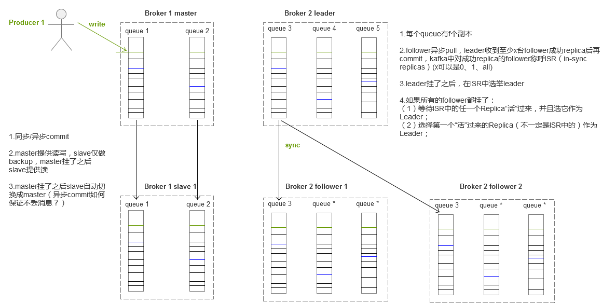

如何设计一款MQ？
- Name : 王伟
- Department : 智能金融
- Email : hzwangwei6@corp.netease.com
MQ是什么？
- Message Queue 消息队列
MQ能做什么？
- 解耦： 面向"消息"的编程
- 异步： MQ把一次RPC调用变2次RPC调用，让"处理"变"通知"
- 削峰： 消息堆积
- 最终一致： 业务依托MQ做最终一致
- 广播： 一次"生产"，多方"订阅"
MQ的一些术语
- Topic: 消息主题，表示一类消息。
- Producer: 消息生产者，负责产生消息，一般由业务系统负责产生消息。
- Consumer Group: 一类Consumer的集合名称，这类Consumer通常消费一类消息，且消费逻辑一致。
- Consumer: 消息消费者，负责消费消息，一般是后台系统负责异步消费。
- Broker: 消息中转角色，负责存储消息，转发消息，一般也称为Server。
想象下：一个完整的MQ服务应该具备什么？
想象下：一个完整的MQ服务应该具备什么？
- MQ服务会有多个broker，可以根据策略做负载均衡
- broker要保证高可用，挂了一台也会有其它的broker顶上，所以broker要有备份
- 同一类(Topic)消息分布到不同的broker、不同的队列
- 需要维护每个队列的生产进度、消费者与每个队列的消费进度
- 保证消息的可靠性，需要有方案不会丢消息
- 消息的堆积方案
- ... ...
下面将从底层开始介绍，如何从单个队列到多个队列，从单机到集群的逐步实现过程，由于时间有限，本篇仅以文件队列为基础展开介绍。
单队列实现发布订阅
单队列：一个topic对应一个Queue
单队列实现发布订阅
- I/O: 顺序读写文件
- 消息存储: 同步、异步、定期、定量
- 消息结构: offset定义
- Topic关系维护: Topic与Queue的关系、Queue的写offset
- 消费关系维护: Consumer、Topic、Queue、读offset
- 消费模型: pull/push
- 消息堆积: 消息过期策略
这块东西可以单独抽出来作为java.util.Queue的实现类使用，适合那些担心应用重启会丢消息的场景，比方说：异步请求的失败重试
单队列实现发布订阅
单机情况下如何优化演进？
多队列模型
单队列是一个topic对应一个Queue，演进后一个topic则有多个Queue
这样做的好处呢？
- 负载均衡: 多个队列，分摊生产、消费请求
- 安全性: 数据分区存放，有一定的保护作用
消费模型
- 集群消费: 一个Consumer Group中的Consumer实例平均分摊消费消息。例如某个Topic有9条消息，其中一个Consumer Group有3个实例（可能是3个进程，或者3台机器），那么每个实例只消费其中的3条消息。
- 广播消费: 一条消息被多个Consumer消费，即使这些Consumer属于同一个Consumer Group，消息也会被Consumer Group中的每个Consumer都消费一次，广播消费中的Consumer Group概念可以认为在消息划分方面无意义。
多队列-集群消费模型
多队列-集群消费模型
- Topic关系维护: Topic与Queue的关系、每个Queue的写offset
- 消费关系维护: Consumer group对每个Queue的消费进度（其下每个Consumer需要共享消费进度，所以消费进度需要统一管理）
- 负载均衡: Producer轮询写，Consumer平均消费
多队列-广播消费模型
多队列-广播消费模型
与集群消费不同的点：
- 消费关系维护: Consumer对每个Queue的消费进度（消费进度存放在消费端本地即可）
- 负载均衡: Producer轮询写，Consumer全部消费（无法loadbalance）
单机还能优化吗？
kafka分区数过多的问题
顺序读、写变随机读、写
RocketMQ解决方案：
问题：顺序读变随机读(同一topic消息在commit log中不是连续的)，会影响消费的吞吐量吗？
单机还能优化吗？
- 内存优化: 增加内存
- 硬件支持: 部署多块磁盘、用固态硬盘(成本高)
- 磁盘读写优化: raid(成本高)
-
设计上优化:
想不出来？
如何从单机到集群？
MQ集群角色
- Broker: 存储消息，转发消息，server
- 注册中心: 服务发现，Topic关系维护，消费关系维护，offset维护
- Producer: 消息生产者，生产消息
- Consumer: 消息消费者，消费消息
MQ集群模型
MQ集群模型
- RPC通信: NIO TCP、协议
- 服务发现: 注册中心
- 负载均衡: Topic、Broker、Queue
-
消费关系: Consumer、Topic、Queue、offset
1. Broker维护消费进度
2. Consumer维护消费进度 - 消费模型pull/push: 双重保证，通知push、消费pull
如何做高可用？
MQ高可用模型
MQ高可用模型
- HA部署模式: Master/Slave、Leader Election
- failover: replica broker、replica queue
- replication策略: 同步commit、异步pull by offset
MQ仅仅如此？
MQ难点剖析
- 投递策略
- 可靠性
- 顺序消息
- 重复消息
- 事务消息
- 辅助功能
投递策略
-
最多一次（At most Once ）:
消息可能会丢，但绝不会重复传输
-
最少一次（At least Once）:
消息绝不会丢，但可能会重复传输
- 仅有一次（Exactly Once）: 每条消息肯定会被传输一次且仅传输一次，很多时候这是用户所想要的。
可靠性
可用性、持久化、确认机制
如何设计可靠的确认机制？
-
单线程同步ack: 同步更新offset
这里的单线程是指单线程消费同一队列/分区
1.单条消息消费
2.多条消息顺序消费 -
单线程异步ack: 适合pull模型
1.pull带上offset
2.Consumer异步维护offset(ack) -
多线程同步ack: 适合push模型
这里的多线程是指多个线程(可以在不同的进程)消费同一队列/分区
- 多线程异步ack: 得不偿失
顺序消息
-
投递顺序: 自定义Producer的loadbalance规则，让一类消息投递到同一个Queue中
网络分区很难保证！！！
-
消息排序: 消息本身有序
？？？定时消息如何实现？？？
重复消息
给消息弄个ID，去重！！！
- Broker去重
- Consumer去重（幂等）
事务消息
- 消息需要二阶段提交
- Broker需要记录事务状态
- Broker需要回查Producer状态
- Producer需要记录事务状态
辅助功能
- 消息索引: 查询消息
- 消息回溯: offset、时间
- 消息轨迹: 消息的生命周期
常见问题
-
消息误消费: 环境问题，设置错误
eg：预发和线上共用同一个MQ，consumer group又是同一个
-
丢消息:
1.ACK确认失败
2.消费超时(次数、时间)
3.设置错误，RocketMQ同一consumer group消费不同的Topic -
消息监控:
1.MQ监控
2.业务方监控(Producer、Consumer)
Thanks
- Q/A
- 如果您觉得还不错，还请关注微信公众号：

- 微信扫描上方二维码，或者搜索并关注微信公众号： 以山之名
/